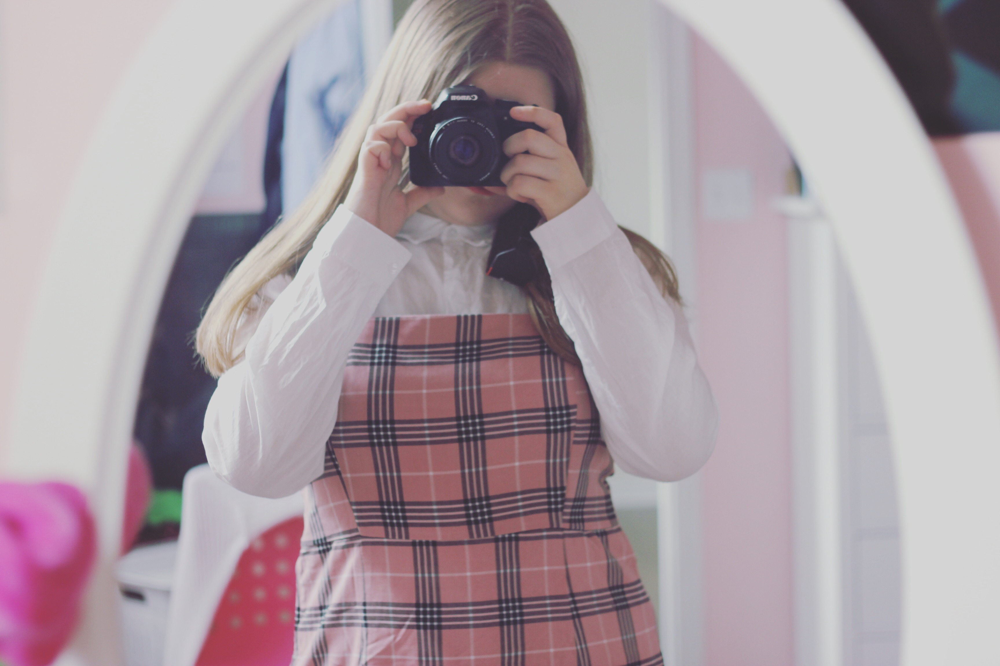

About Me
A Little About Me
 Hello there! My name is Juliette Savard and I love writing! I first started writing back when I was around four years old. I know, I have been writing for a long time. I would draw pictures and tell my mother what to write on each page because I could not read or write yet. I wrote my first book when I was around thirteen years old, but never ended up publishing it. It still became a big accomplishment in my life and even though it might never be my main job, I have always known I wanted to at least write on the side. That is when I started to work with my drama teacher at my school and I would write plays and short story for fun which she would always read and give me feedback on. One day, she suggested that I write a ten-minute play and submit it to a writing contest. I decided to do it for fun and then forgot about it since I did not think I would come even close to winning. To my surprise, I found out months later that I had won fourth place and with that came a bunch of cool opportunities, like meeting professional actors and writers and getting the chance to chat with them. The following year I submitted another play to that contest and ended up winning second place and even more opportunities were offered to me. It made me realize that I really had a passion for it and the pride I felt when people would read my stories was something indescribable. When the pandemic hit, I started writing songs as well and realize that writing came in many shapes and forms. I had a lot of fun trying all of them and spending those six months locked in my house, writing down all of my ideas and showing them to my family members. I also started writing online and ended up gaining a quite big amount of readers, which increased my confidence in my stories and writing. Nowadays, I keep writing every time I can and know that I will always write on the side no matter what I end up doing with my life!Programs Used
Here are the different programs I used to work on my writing!
| Types of Projects | Programs |
|---|---|
| Novels / Short Stories / Poetry | Google Docs |
| Microsoft Word | |
| Grammarly | |
| Plays / TV Shows | CETLX |
| Google Docs | |
| Microsoft Word | |
| Grammarly | |
| Musicals / Songs / Music Pieces | Google Docs |
| Microsoft Word | |
| Noteflight |